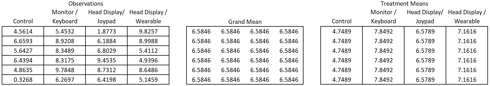

The experimental designs in this section have 2 key characteristics in common:
Conditions are assigned to subjects (a.k.a. experimental units) completely at random
A consistent method of checking requirements and factor relationships (What I’m trying to get at is that there is no nesting/blocking/random factors and so the MSE is always calculated the same. But I’m not sure if that will make sense to students this early in the semester.)
NOT SURE HOW CRITICAL THESE DEFINITIONS WILL BE HERE, DEPENDS ON WHAT BRETT COMES UP WITH. THERE IS ALREADY SOME OVERLAP/REPEATING WITH THE FACTOR STRUCTURE SECTION. BUT REPITITION MAY NOT BE A BAD THING.
To assign something completely at random means that each experimental unit has a known and equal chance of being selected for a particular treatment and that no other considerations are taken into account when making treatment assignments.
Factorial experiments involve two or more factors that are crossed. Full factorial crossing occurs when each combination of factor levels is present in the study. (A study with just one factor is not technically a factorial design, but we will lump it in with our discussion of factorial experiments here because of the completely random treatment assignment).
Contrast a factorial design with the one-at-a-time approach. In a one-at-a-time approach, if I had two factors I wanted to study I would run two separate experiments to evaluate the effect of each factor on the response one-at-time. Factorial designs have a couple of major advantages over one-factor-at-a-time studies.
They are a more efficient use of our time and material: I can get information about both of my factors from just one observation
Perhaps most importantly, factorial designs allow the researcher to estimate interaction effects. Or in other words, we can observe how one factor’s effect on the response variable changes for different levels of the other factor.
In summary, “factorial” refers to how you determine which fact level combinations will be included in the study, and “completely randomized” refers to how treatments are assigned to subjects.
Balanced vs. Unbalanced Data
I feel like we need a disclaimer or caveat somewhere in the book to explain that the formulas presented here only work for balanced designs. A similar approach is used for unbalanced data, but the formulas would need to be adjusted to weight the groups according to their size. Maybe the disclaimer belongs here, maybe in the effects model or anova sections. Or maybe it has it’s own “broad topic”…?
BF[1]
A study with just one factor that is varied in the design.
Overview
In a basic one-way factorial design (BF[1]), only one factor is purposefully varied. Each experimental unit belongs to exactly one factor level. (In the case of an observational study, only one independent factor is under consideration.)
Factor Structure
The factor structure for the model resulting from a completely randomized, one factor design is:
Figure 1: Example of BF1 Factor Structure
Figure 1 illustrates a factor with 4 levels, 6 replications at each level.
Hypothesis and Model
A more detailed description of the model for an ANOVA with just one factor:
\[
y_{ij} = \mu + \alpha_i + \epsilon_{ij}
\]
\(y_{ij}\): the \(j^{th}\) observation from factor \(i\)
\(\mu\): the grand mean of the data set. Also referred to as an overall mean or benchmark.
\(\alpha_i\): effect of treatment \(i\)
\(\epsilon_{ik}\): the error term, or residual term of the model. There are j replicates for each treatment. It represents the distance from an observation to its treatment mean (or predicted value).
The null and alternative hypotheses can be expressed as:
\[
H_o: \alpha_1 = \alpha_2 = ... = 0
\]\[
H_a: \alpha_i \neq 0 \quad \text{for at least one }\ \alpha_i
\]
Assumptions
A one-way ANOVA model may be used to analyze data from a BF[1] design if the following requirements are satisfied:
Individual realizations of the error term (i.e. residuals) are independent of one another. We generally consider this requirement met if each experimental unit is randomly assigned to only 1 factor level. However, the researcher should always be on the look out for violations of this assumption and other bias.
The error term of the model (\(\epsilon_{ik}\)) is normally distributed. This assumption is met when the residuals are normally distributed (as seen in a qq-plot).
The population variance of each group is equal. This is often called the homogeneity of variance, or constant variance assumption. This is considered met when each group of residuals in the residual vs. fitted-values plot shows a similar vertical spread.
Design
In a one factor design, one factor is purposefully varied and all other factors are controlled in order to isolate the effect of just the factor under study. Each level of the factor is considered a treatment.
In a completely randomized design, each experimental unit is randomly assigned to exactly 1 treatment. It is common to keep the number of units assigned to each treatment the same to ensure balance. This can be done by listing all the subjects, then listing the treatments, as seen below:
Subject
Treatment
Order
Subject 1
A
1
Subject 2
A
2
Subject 3
B
3
Subject 4
B
4
Subject 5
C
5
Subject 6
C
6
Then you randomly shuffle the treatment column. (You should also be paying attention to the order in which subjects and treatments are being experimented on as this could be a potential source of bias. In a BF[1], you randomize the order also.) The result might look something like this.
Subject
Treatment
Order
Subject 1
A
4
Subject 2
B
3
Subject 3
C
6
Subject 4
C
5
Subject 5
A
1
Subject 6
B
2
You may notice in the above example that, even with randomization, treatment C occurs in the last 2 observations. If we were truly concerned about the order we could be more strategic and implement a blocked design to prevent “unlucky” ordering and pairing.
Consider the following example. An experiment was done to assess different modes of virtual training in how to launch a lifeboat. Sixteen students in the maritime safety training institute were a part of the study, and each of the students were assigned one of four possible virtual training experiences. The four experiences included:
Lecture/Materials (Control)
Monitor/Keyboard
Head Monitor Display/Joypad, and
Head Monitor Display/Wearables.
The response variable was the student’s performance on a procedural knowledge assessment (performance is defined as their level of improvement from pre to post test).
We want to assign each treatment to four students. We could get 16 pieces of paper and write “Treatment 1” on 4 pieces, “Treatment 2” on another 4 pieces, and so on until each treatment has 4 pieces of paper. We could then put them in a hat, mix them up and then randomly draw out a piece of paper to assign it to a subject. Intuitively this makes sense, but writing and cutting paper is slow and inefficient. We could implement a similar process in R to assign treatments.
First, we list all the possible treatments, and repeat that listing until it is the same size as our count of subjects. (Note, if your number of subjects is not an exact multiple of the number of treatments, you may need to decide which treatments deserve fewer observations)
Code
#Repeat the sequence of 1 to 4, four timesTreatment <-rep(1:4,4) #Create a sequence from 1 to 16#Paste the word "Subject " in front of each id #Subject <-paste("Subject", seq(1:16), sep =" ")#Combine the vector of treatment numbers and Subject ID's into 1 tibble/data frameassignment_table <-tibble(Subject, Treatment)#print the table, pander() makes it look nicepander(assignment_table)
Subject
Treatment
Subject 1
1
Subject 2
2
Subject 3
3
Subject 4
4
Subject 5
1
Subject 6
2
Subject 7
3
Subject 8
4
Subject 9
1
Subject 10
2
Subject 11
3
Subject 12
4
Subject 13
1
Subject 14
2
Subject 15
3
Subject 16
4
Then we randomly shuffle the Treatments column to get the following assignments. Check out the R-code to see how this is done.
Code
#set.seed() allows us to get the same random sample each timeset.seed(42) #sample() will randomly select from the Treatment vector 16 times without replacement# %>% is called a pipe. It simply takes the output from the command on the left# and sends it to the command on the righttibble(Subject, sample(Treatment, 16)) %>%pander()
Subject
sample(Treatment, 16)
Subject 1
1
Subject 2
1
Subject 3
4
Subject 4
1
Subject 5
2
Subject 6
4
Subject 7
2
Subject 8
2
Subject 9
4
Subject 10
3
Subject 11
3
Subject 12
1
Subject 13
3
Subject 14
4
Subject 15
3
Subject 16
2
We can see here that subject 1 should get treatment 2. Subject 2 gets treatment 4, Subject 3 gets treatment 1, and so on.
Decomposition
This section serves as a bridge between the design and the analysis of an experiment. It is equivalent to doing the analysis by hand. The primary goal is to see how the design decisions impact the analysis; including a deeper understanding of what the numbers in an ANOVA table mean and how they are calculated.
The factor structure diagram of an experimental design is an effective way to organize and plan for the type of data needed for an experiment. Recall that in our lifeboat example there were four levels of training method with six replicates for each (the actual study used 16 observations per treatment). The diagram below gives the factor structure of the design, and the accompanying mathematical model.
Example of BF1 Factor Structure
A basic one-way factorial design has three analysis factors: the benchmark, treatment, and residual. The effects of these factors can be summed together to find each observed value.
The observed values on the left show that there are 24 distinct observations of performance score, represented by the 24 cells - one for each of the observed values.
The benchmark represents the grand mean (or overall mean). The single large cell indicates that there is only one grand mean and it is part of every observation.
The treatment factor involves the four levels of the treatment represented by the four vertically long cells. Each treatment may have a distinct mean (or effect).
The residual error represents the difference between the observed value and the predicted value. The predicted value, also called the fitted value, is the sum of the grand mean and treatment effect. Each of the cells represent a distinct value for the residual error.
Degrees of Freedom
We can use our understanding of inside and outside factors to determine the degrees of freedom (df) for the benchmark, treatment, and residual errors factors. We start with 16 observations - or pieces of information. In other words, we have 16 degrees of freedom that need to be allocated to the 3 factors.
General Rule for Degrees of Freedom
df = Total levels of a factor minus the sum of the df of all outside factors
An alternative way to find degrees of freedom is to count the number of unique pieces of information in a factor.
In the lifeboat example, benchmark has one level (shown by the one cell in Figure 1) and there are no outside factors for benchmark. Therefore, the degrees of freedom for benchmark is one.
Remember, the degrees of freedom represents the number of unique pieces of information contributing to the estimation of the effects for that factor. In this case, as soon as I estimate the benchmark effect for just one of the observations, I know it for all the observations. In other words, only 1 value was free to vary. As soon as it was known all the other values for benchmark were also known. Therefore, there is just one unique piece of information in the benchmark factor. Benchmark has just 1 degree of freedom.
For treatment factor, there are four levels of the factor (shown by the four vertically long cells for treatment in Figure 1). Benchmark is the only factor outside of treatment. Take the number of levels for treatment factor (4 training methods) and subtract the degrees of freedom for benchmark (1), which yields 4-1 = 3 degrees of freedom for treatment.
We could just as easily have used the other approach to finding the degrees of freedom: counting the unique pieces of information the treatment effects really contains. Since all observations from the same treatment will have the same treatment effect applied, we really only need to know 4 pieces of information: the effect of each treatment. But the answer is actually less than that. Because we know that the effects must all sum to zero, only 3 of the effects are free to vary and the 4th one is constrained to be whatever value will satisfy this mathematical condition. Thus, the degrees of freedom is 3. As soon as we know 3 of the treatment effects, we can fill in the treatment effects for all the observations.
For residual errors, there are 24 levels of the factor (as shown by the 24 cells for residual error on the far right of Figure 1). Both benchmark and treatment are outside factors for the residual errors factor. Take the number of levels for the residual error (24) and subtract the sum of the degrees of freedom for benchmark and treatment (3+1=4). The residual error has 24 - (3+1) = 20 degrees of freedom.
The approach of counting unique pieces of information can be applied here as well. In this case, we use the fact that the residual factor effects must sum to zero within each treatment. So within each treatment, 5 of the observations are free to vary, but the 6th will be determined by the fact that their sum must be zero. Five observations multiplied by 4 treatments is 20 observations, or in other words, 20 degrees of freedom.
Factor Effects
We can use our understanding of inside vs. outside factors to estimate the effect size of the benchmark, treatment, and residual errors factors in the lifeboat training study. In other words, we can estimate the terms in the one-way ANOVA model.
General Rule for Effect Size
Effect size = factor level mean - the sum of the effects of all outside factors
Calculate means
To estimate all the factor effects we must first calculate the mean for the benchmark factor and the means for each level of training method.
For benchmark, get the mean of all 24 observations. The mean for all the observations is 6.5846. There is only one level for benchmark so this number is placed into each of the cells for the benchmark factor in Figure 2.
Figure 2: Raw data and mean for benchmark factor
For the treatment factor, calculate the mean of each of the four levels. To calculate the mean for Control:
You can similarly find the mean for monitor keyboard is 7.8492, the mean for head monitor display/joypad is 6.5789, and the mean for head monitor display/wearables is 7.1616. In Figure 3 these means are placed in the respective training method column.

Figure 3: Raw data and means for benchmark and training factors
Calculate effects
From here we can calculate the effects for benchmark, training method and residual errors. We will use the general formula for calculating effect size as stated above.
For the benchmark, there is only one level and there are no outside factors. Therefore, the effect due to benchmark is 6.5846 (equivalent to its mean) and this affect is applied to all 24 observations.
The training method factor has four levels: one for each method. To calculate the effect of a training method, take the training method mean and subtract it from the effect due to benchmark. For the “Control” method, this looks like:
\[
4.789 - 6.5846 = -1.8358
\]
Being in the control group has the effect of reducing the student’s performance by 1.8358 on average compared to the grand mean. In a similar way you can find the effect for Monitor/Keyboard \(7.8492 - 6.5846 = 1.2645\). This means the student performance scores increased by 1.2645 on average in this training method compared to the grand mean. For Head Monitor Display/Joypad, the effect is \(6.5789 - 6.5846 = -0.0058\). For Head Monitor Display/Wearables the effect is \(7.1616 - 6.5846 = 0.5770\) (see below).
Figure 4: Training Method Effects
To calculate the residual error effects we must remember that there are 24 levels of the residual error factor. Therefore, the factor level mean for a residual is simply the observed value itself. This means the residual effect can be calculated by taking an observed value and subtracting the effects for benchmark and the effect for training method that particular observation received. For instance, for the observation located in the top left of our data set the observed value is 4.5614. Subtract the sum of the effects of outside factors (benchmark and training). This observation was from the control group so we get:
\[
4.5614 - (6.5846 + -1.8358) = -0.1875
\]
The value for the top left cell in residual error effects is -0.1875. This means the observed value of 4.5614 was lower than we would have expected it to be. In other words, the performance score of 4.5614 was 0.1875 less than the mean of the control group. In this case, this individual’s performance was lower than his/her peers who received the same type of training.
We can repeat the calculation for the first residual in the second column. Take the observed value (5.4532) and subtract the sum of the effect due to benchmark and its respective training (in this case monitor/keyboard). The residual is
\[
5.4523 - (6.5846 + 1.2645) = -2.3960
\]
Repeat this process for all the remaining 22 residual values. The result is shown in Figure 5.
Figure 5: Residual Effects
Completing the ANOVA table
Now that we have calculated degrees of freedom and effects for each factor in a basic one-way factorial design, we can calculate the remaining pieces of the ANOVA table: Sum of Squares (SS), Mean Squares (MS), F-statistic and p-value. An ANOVA table essentially steps through the variance calculation that is needed to calculate the F statistics of an ANOVA test. In other words, a completed ANOVA table enables us to conduct a hypothesis test of the significance of the treatment.
In an ANOVA table, each factor and their associated degrees of freedom are listed on the left. Note: the total degrees of freedom are the total number of observations.
Source
df
SS
MS
Fvalue
pvalue
Benchmark
1
Treatment
3
Residual Error
20
Total
24
To get the sum of squares (SS) for a factor, for each observation the effect for that factor needs to be squared. Then all the squared values are summed up to get the sum of squares.
For benchmark, the effect of 6.5845 is listed 24 times, once for each observation. The value of 6.5845 will be squared. This squaring will be done 24 times and the squared values will then be added together to get the sum of squares due to benchmark.
The treatment factor has four different effects, one for each level of the factor. For each effect, the value is squared and then multiplied by the number of observations within the level of the factor. Then, the results are added across all levels to get the sum of squares due to treatment. For instance, for the control group, the effect is -1.8358. The value is then squared, and then multiplied by six due to the six observations within the control group. This is done for the other three levels as well and then the resulting values from the four levels are added.
We can now calculate the mean squared error column, or mean square (MS). This mean is calculated by dividing sum of squares by the number of unique pieces of information that make up the factor. In this way we convert a total into an average; or in other words we change a sum into a mean. The mean squared error is the same as a variance. (The Root Mean Squared Error is equivalent to a standard deviation).
The purpose of the ANOVA table is to partition or break apart the variability in the dataset to its component pieces. We can then see more clearly which factor is a bigger source of variability.
When getting an F test statistic, testing for the treatment factor is the primary factor of interest so only the F test statistic for treatment is calculated for the analysis. To get the F test statistic for treatment, take the mean square (MS) due to treatment and divide by the mean square (MS) due to the residual error. Since the mean square error is equivalent to a variance, you can think of this as calculating the variance in treatment effect sizes in the numerator and the variance of the distances for an observed value to its respective treatment mean in the denominator. Simply put, it is the between groups variance divided by the within group variance.
To complete the ANOVA, table, the p-value for the treatment factor is calculated based on the F statistic and the degrees of freedom for both Treatment Factor and Residual Error. In practice, you would not compute this by hand, but in order to complete the decomposition of variance in a manual way, we will calculate the p-value in R using the pf() function: 1 - pf(test statistic, df of Treatment, df of Residual error).
In this example, we get
1-pf(2.11, 3, 20)
[1] 0.1310051
This p-value, 0.1310, is greater than a typical level of significance (0.05), so we would fail to reject the null hypothesis that all the effects due to treatment are equal to zero. Meaning, we have insufficient evidence to say that any of the training methods had an impact on procedural knowledge test scores regarding launching a life boat.
Source
df
SS
MS
Fvalue
pvalue
Benchmark
1
1040.57
1040.57
Treatment
3
31.81
10.60
2.11
0.131
Residual Error
20
100.49
5.02
Total
24
1172.87
Analysis in R
When working with a dataset the first thing to do is get to know your data through numerical and graphical summaries. Numerical summaries typically consist of means, standard deviations, and sample sizes for each factor level. Graphical summaries most usually are boxplots or scatterplots with the means displayed. Instructions for how to create these plots in R are found at R Instructions->Descriptive Summaries section of the book.
You then create the model using the aov() function. To see results of the F-test you can feed your model into a summary() function.
myaov is some name you come up with to store the results of the aov() model.
Y must be a “numeric” vector of the quantitative response variable.
X is a qualitative variable (should have class(X) equal to factor or character. If it does not, use factor(X) inside the aov(Y ~ factor(X),...) command.
Df Sum Sq Mean Sq F value Pr(>F)
Brush 3 86.31 28.769 3.822 0.0258 *
Residuals 20 150.56 7.528
---
Signif. codes: 0 '***' 0.001 '**' 0.01 '*' 0.05 '.' 0.1 ' ' 1
We then interpret the results. Toothbrush appears to be a significant factor. Since the p-value in this case is significant we may be able to look at the graphical summaries to understand which factor level effects are significant. We may also want to do some pairwise tests of the means or contrasts.
Now that the model is created the assumption need to be checked. Code and explanation for assumption checking can be found in the R Instructions->Model Assumptions section of the book.
Populate this section yourself with links to good examples, definitions, other sections within this textbook, or anything else you think will be interesting/helpful.